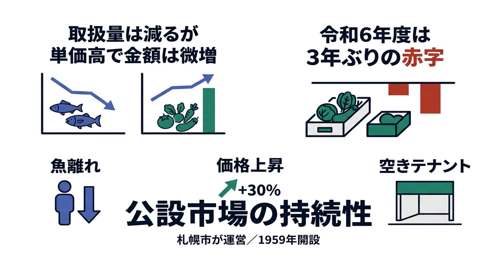

卸売市場の持続性 ― 魚離れ・取扱減と公設市場の収支
札幌市が所有・運営する公設の中央卸売市場。魚離れ・漁獲減・価格高騰で取扱が細り、令和6年度は3年ぶりの赤字に。観光・給食・食育との連携が活路になるか。

背景
札幌市中央卸売市場は、札幌市が土地・建物を所有し業務規程・使用料・監督を担う『公設の市場』で、昭和34年（1959年）に北海道初の中央卸売市場として開設された。会計は市場事業会計（特別会計）で独立採算が原則だが、収入の柱は取扱額に連動する施設使用料・売上高割使用料のため、取扱の減少がそのまま収支悪化に直結する。魚離れ・漁獲減・価格高騰という構造的な逆風のなか、公設ゆえ収支悪化は最終的に市の財政（市民負担）につながり得る。
主要データ
| 取扱量・取扱額（令和6年度） | 26.4万t ／ 1,546億円（量は減・単価高で額は＋約6%） |
|---|---|
| 収益的収支（令和6年度） | ▲0.37億円（3年ぶりの赤字）。資金残高16.22億円 |
| 空き区画 | 募集中7区画・約1,224㎡。事務所使用料は令和3年2.84億→令和5年2.67億へ減少 |
| 魚介類の消費（全国） | 1人当たり 2001年度40.2kg → 2023年度21.4kg（ほぼ半減） |
| 生鮮魚介の価格 | 5年で約30%上昇（総務省CPI 2020→2025） |
| 全国の漁獲量 | 1984年ピークの約3分の1。北海道もサケ・サンマ・スルメイカが不漁 |
| 開設・所有 | 昭和34年(1959)開設。開設者＝札幌市（公設・特別会計） |
事実
- 札幌市中央卸売市場は札幌市が開設・所有する公設市場（会計は市場事業会計＝特別会計）。令和6年度決算は収益的収支が▲0.37億円と3年ぶりの赤字に転じた。主因は空き事務所の入居が進まず施設使用料が減ったこと。
- 令和6年度の取扱量は26.4万t（前年27.5万t）と減る一方、取扱額は1,546億円（前年1,457億円）と単価高で増加。『数量減・単価高』の傾向が続く。
- 背景に構造的な需要減がある。全国の1人当たり魚介類消費は2001年度の40.2kgから2023年度は21.4kgへほぼ半減し、2011年度に肉類が魚を逆転。生鮮魚介の価格は5年で約30%上昇（CPI）し、『高い→買わない→扱い減』に陥りやすい。
- 全国の漁獲量は1984年ピークの約3分の1に減少し、北海道でもサケ・サンマ・スルメイカの不漁が続く。市場に入る魚そのものが減っている。
- 人口減で道内の公設卸売市場は統廃合・縮小が進み、函館・釧路などは地方卸売市場に。中央卸売市場の集約で札幌の分荷拠点としての役割は相対的に増すが、取扱減は使用料減に直結する。
- 活性化の取組として、通年の市場見学や札幌市学校給食会主催の『親子市場見学・料理教室』（小4〜6＋保護者・無料）など、市場と給食・食育をつなぐ企画が既にある。
取扱額の部門別（令和5→6年度・億円）
水産＋41億・青果＋48億。数量は減ったが単価上昇で金額は増加。出典：各年度 事業会計決算概要（札幌市中央卸売市場）。
取扱量の推移（量で見る・万t）
価格の影響を受けない『量』でみると縮小が続く（2022→2024で約1割減）。R7・R8は予算（計画値）。出典：各年度 事業会計 決算概要・予算概要（札幌市中央卸売市場）。
取扱量の推移（量で見る・2022→2026年度）
| 年度 | 取扱量 合計 | 水産物 | 青果物 | 区分 |
|---|---|---|---|---|
| 2022 (R4) | 29.6万t | — | — | 実績 |
| 2023 (R5) | 27.5万t | 6.3万t | 21.0万t | 実績 |
| 2024 (R6) | 26.4万t | 6.3万t | 20.1万t | 実績 |
| 2025 (R7) | 26.2万t | 6.7万t | 19.6万t | 予算 |
| 2026 (R8) | 26.9万t | 6.3万t | 20.6万t | 予算 |
取扱額は単価上昇で横ばい〜微増だが、『量』は2022→2024で約1割減と縮小が続く。R7・R8は予算（計画値）。出典：各年度 事業会計 決算概要・予算概要。
取扱量・取扱額・収支の推移（令和5→6年度）
| 項目 | 令和5年度 | 令和6年度 | 増減 |
|---|---|---|---|
| 取扱量 合計 | 27.5万t | 26.4万t | −1.1万t |
| うち青果部 | 21.0万t | 20.1万t | −0.9万t |
| うち水産物部 | 6.3万t | 6.3万t | ±0 |
| 取扱額 合計 | 1,457億円 | 1,546億円 | +89億円 |
| うち青果部 | 571億円 | 619億円 | +48億円 |
| うち水産物部 | 886億円 | 927億円 | +41億円 |
| 収益的収支 | +1.18億円 | ▲0.37億円 | 赤字転落 |
| 資金残高 | 14.66億円 | 16.22億円 | +1.56億円 |
単位は概数（万t・億円未満を四捨五入）。端数処理で部門合算が合計と一致しない場合がある。出典：各年度 事業会計決算概要（札幌市中央卸売市場）。
空き区画（募集中）
| 棟 | 階 | 面積 | 月額使用料 | 用途 |
|---|---|---|---|---|
| 水産棟 | 2F | 146㎡ | 360,386円 | 事務所 |
| 青果棟 | 3F | 28㎡ | 69,115円 | 飲食店等 |
| 青果棟 | 3F | 40㎡（2室） | 98,736円 | 飲食店等 |
| 青果棟 | 3F | 719㎡ | 1,774,779円 | 事務所 |
| 水産保冷配送センター | 3F | 160㎡ | 296,208円 | 事務所 |
| 水産保冷配送センター | 3F | 91㎡ | 168,468円 | 事務所 |
| 合計（7区画） | — | 約1,224㎡ | — | — |
募集ページの現時点スナップショット。総区画に対する「空室率(%)」は非公表。別途、光熱水費・共用部負担金・立体駐車場（1台9,350円）等。
解釈
卸売市場の収支悪化は、個々の経営努力より『魚離れ・漁獲減・価格高騰・道内市場の縮小』という構造要因の重なりで起きている。公設ゆえ、赤字は最終的に市の財政（市民負担）に及ぶ。打ち手は取引機能の効率化に加え、①観光・食の発信（場外の賑わい・一般開放）、②給食での道内魚介の活用（安定需要・食育・魚食普及）、③見学・体験ツアーの拡充、という『市場を街の資源として開く』方向にある。賛否ではなく、公設市場をどう持続させ、どんな価値を市民に返すかの設計が問われる。
提案
- 継続的・定例的な一般開放（市場まつり・定期市・朝市連携）と場外の飲食・物販強化で、集客と魚食普及を同時に進める。
- 学校給食での道内魚介の比率引き上げ。価格変動・規格・加工（骨取り等）の調達ハードルを下げ、市場に安定需要の受け皿をつくる。
- 社会科見学・親子見学ツアーの拡充で、食育と次世代の魚食習慣を育てる。
- 空き区画のテナント誘致と、施設更新計画・収支見通しの透明化（公設としての説明責任）。
深掘り — 市民の声と答え
専門的な市場だが、観光などとの連携は必要ではないか？
卸売市場は本来プロの取引の場で、一般客の入場は2階見学通路に限り1階せり場は非公開です。一方で食の発信・集客は消費拡大に有効で、場外ゾーンの飲食・物販強化や一般開放イベントによって『取引の場』と『観光・食の発信』を両立させる余地があります。豊洲・築地では見学が無料開放されたうえ、民間の有料食べ歩きツアーや定例イベントが観光の厚みを生んでいます。札幌も場内見学（無料・要予約）と隣接の場外市場はありますが、継続的な観光商品化（有料ガイドツアー・定例の市場まつり等）が弱く、ここが伸びしろです。
他の市場（豊洲・築地など）は、いろいろなイベントで盛り上げている
豊洲は見学・ツアー、築地場外は食べ歩きの一大観光地です。各地で市場まつりや料理教室が集客と魚食普及に寄与しています。札幌も単発の消費拡大フェアはありますが、継続的・定例的なイベント設計（定期市、朝市連携、インバウンド向けツアー等）が今後の課題です。
給食に占める道内魚介の比率を上げる可能性は？
給食は道内産魚介の安定した受け皿になり得ます（地産地消・食育・魚食普及・市場の取扱増が同時に進む）。実際に札幌市学校給食会主催の『親子市場見学・料理教室』など市場と給食をつなぐ取組は既にあります。価格変動・規格・加工（骨取り等）の調達ハードルをどう下げるかが論点です。
市場を体験するコース（小学校などの見学ツアー）はあるのか？
あります。通年で市場見学を実施（要予約・2階見学通路・所要約1.5時間、10名以上の団体には案内員、繁忙期12/2〜1/4は不可）。小学生向けには『親子市場見学・料理教室』（学校給食会主催、小4〜6＋保護者、無料）も。社会科見学・食育の受け皿として拡充の余地があります。
検討体制・メンバー
札幌市経済観光局（中央卸売市場）が開設者として所管。検討には卸売・仲卸・関連事業者、水産・青果の生産者、学校給食会・教育委員会、観光・飲食業、食育の専門家を交え、取引機能の効率化と『市場を街に開く』施策を同じテーブルで議論するのが望ましい。
AIノート
AIの貢献度は中。需要予測や価格・入荷のデータ分析、見学・イベントの企画最適化、給食の献立・調達マッチングには役立つ。ただし魚離れや漁獲減という構造要因は社会・環境の問題で、AIは現状把握と施策設計の支援にとどまる。
関連課題
関連する市の計画・制度
更新記録
- 2026-10-20新規作成。令和6年度決算（取扱26.4万t・1,546億円、収支▲0.37億円）と、魚離れ・漁獲減・価格＋約30%・道内市場の縮小を整理。観光/給食/見学連携のビジョンをQ&Aで掲載。
- 2026-10-20本文を拡充。取扱額の部門別グラフ、令和5→6年度の総合比較表、空き区画（募集中7区画）の一覧表を追加。
- 2026-10-20Q&A（観光連携）に、他市場（豊洲・築地）は見学無料＋民間の有料ツアー・定例イベントで観光の厚みがある一方、札幌は観光商品化が弱く伸びしろ、という比較を追記。
- 2026-10-20『取扱量の推移（量で見る・2022→2026年度）』のグラフと表を追加。価格の影響を除いた量ベースで縮小が続くことを可視化。